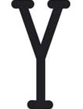

18
Viernes
 Castilla La Mancha Media (18:30)
Castilla La Mancha Media (18:30)
Toros desde El Provencio (Cuenca)
Rejones
Toros Couto de Fornilhos
Procedencia Conde de la Corte y D. Atanasio Fernández
 Toros de Santa Teresa
Procedencia D. Luis Gamero Cívico-D. Juan Guardiola Soto
Roberto Armendáriz
Ferrer Martín
Francisco Martín